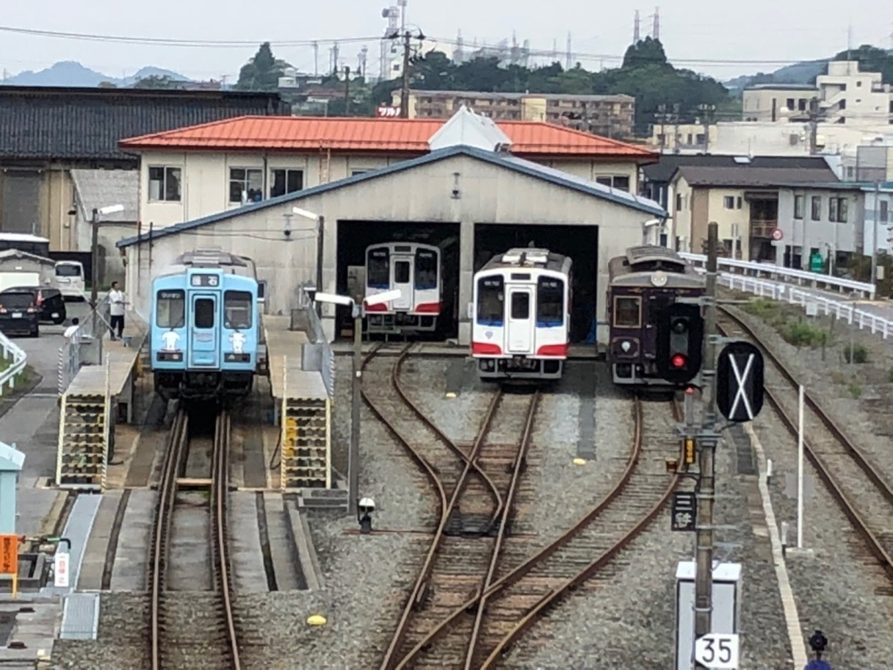
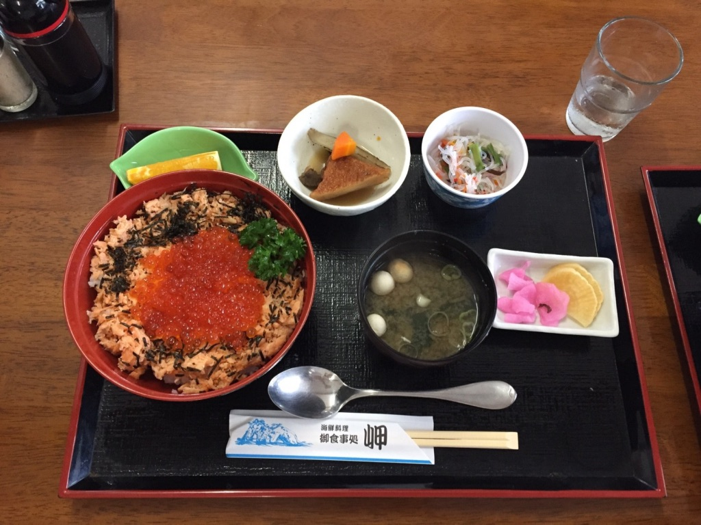
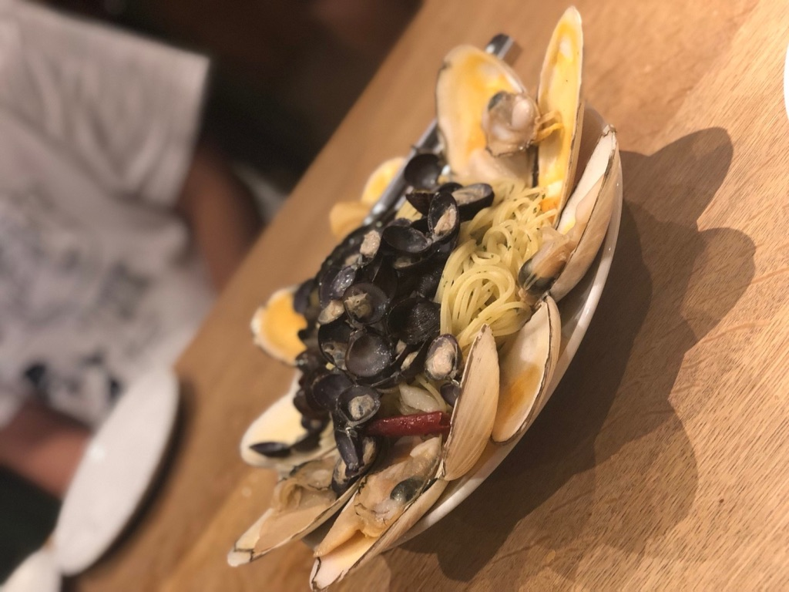
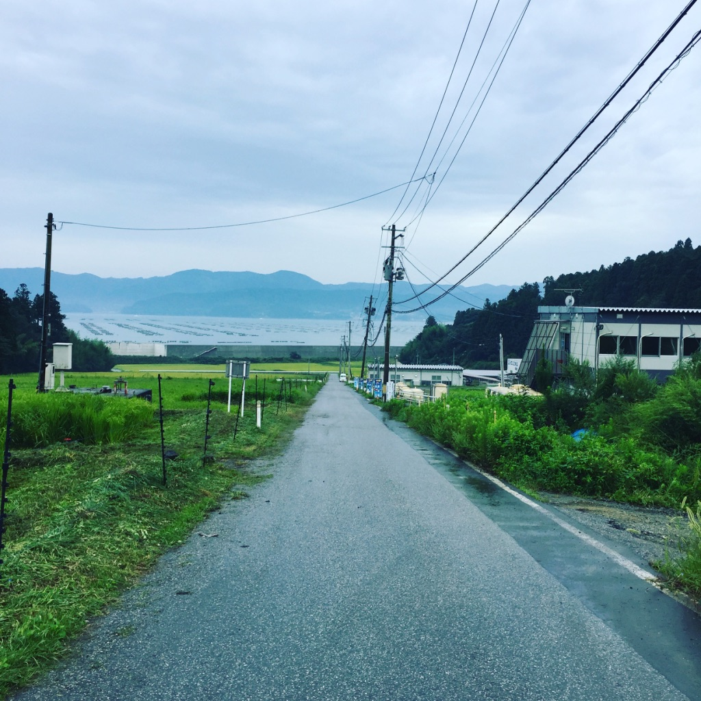

活 動 記 録
活 動 記 録
活動記録
ACTIVITY
我々ToKuは、９月６～８日に三陸合宿を行いました。この合宿は、三陸の魅力を伝えるために、自分たちが実際に足を運んで多くの魅力を見つけること、そして東日本大震災のあの悲劇を目の前で目の当たりにした方たちに、今後のために伝えていきたいことを聞く、さらには毎年１２月に開催する「三陸なう」というイベントにご協力いただいている企業にご挨拶に回る、というのが主な目的でした。
今回の合宿では、福島県相馬市、岩手県大船渡市、陸前高田市、気仙沼市を訪れました。
１日目は、主にToKuメンバーの地元を巡りました。天気にも恵まれ、相馬の海は水平線がどこまでも見える最高の景色でした。
２日目は、２班に分かれて行動しました。上級生グループは、酔仙酒造を訪れ、日本酒の飲み比べをさせていただきました。下級生グループは、大船渡市の碁石海岸を散策しました。
その後、大船渡津波伝承館にて、東日本大震災の際に館長の齊藤さんが撮影した実際の津波発生の瞬間の映像や写真などをもとに、災害の悲惨さ、自然の怖さを学びました。
３日目は、朝から気仙沼市魚市場へ行き、ちょいのぞきツアーに参加し、東日本大震災から復活した魚市場で獲れた新鮮なサンマやカツオなどを見学しました。
その後、八葉水産さんや菅原工業さんにご挨拶させていただきました。そして最後には唐桑半島ビジターセンターの中にある津波体験館を訪れ、津波や地震の映像とともに実際に揺れたり風を感じたりする体験をしました。
この３日間で、美しい景色、美味しい食べ物、人の温かさ、そして東日本大震災の脅威に触れました。私たちの三陸への興味や関心に、お会いした方々はたくさん答えてくださいました。知れば知るほど興味が湧き、より学び、より多く人に伝えたくなる、そんな町でした。（R.A.）
  続々更新中!
keep updating...